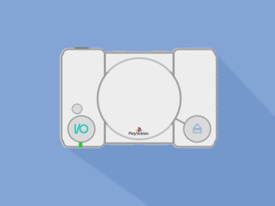

| Home | Playstation | Playstation 2 | Playstation 3 | Playstation 4 |
|
La PlayStation é una console per videogiochi a 32 bit presentata dalla Sony Computer Entertainment nel dicembre dell'anno 1994.Spesso é usato il termine PlayStation per riferirsi a delle console dell'omonima serie, tuttavia per PlayStation si dovrebbe commercialmente intendere solo la prima versione della console. Ci si riferisce alla PlayStation anche con l'abbreviazione PSX, riprendendo il nome in codice usato durante la fase di sviluppo del sistema, ovvero Play Station Xperimental. L'edizione ridisegnata, presentata nei primi mesi del 2000, si chiama PSone. |
 |
|
Vuoi altre informazioni? |